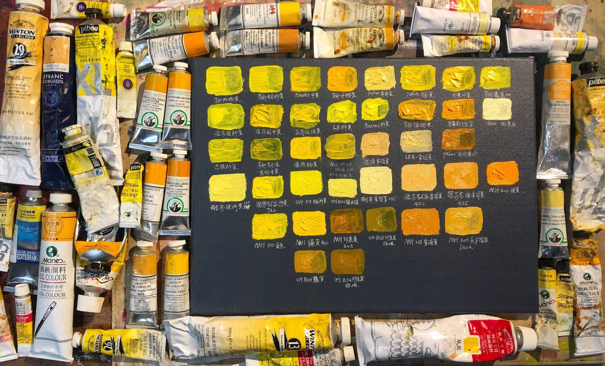

公开课
色卡集合—油画中常用的颜料
棕色
棕色油画颜料是一种常用的颜料，通常用于绘画中的暗色调和阴影部分。棕色油画颜料的色彩范围广泛，从深红褐色到浅黄褐色不等。这种颜料通常由土、氧化铁、铬酸盐等物质制成。
颜色：棕色油画颜料的颜色范围广泛，包括红褐色、黄褐色、灰褐色等。这些颜色通常用于绘画中的暗影、阴影和深色部分。
品质：棕色油画颜料的品质因制造商和制作工艺而异。高品质的棕色油画颜料通常含有较高的颜料浓度和色彩稳定性。
材料：棕色油画颜料通常由土、氧化铁、铬酸盐等物质制成。这些物质可以通过研磨和混合制成颜料，也可以与油脂混合后用于绘画。
应用：棕色油画颜料通常用于创作阴影和深色部分，也可以用于创作大自然景观和肖像等。棕色油画颜料可以与其他颜料混合使用，以产生更多的颜色和质地。
总之，棕色油画颜料是绘画中常用的颜料之一，具有广泛的色彩范围和应用。它们在创作中可以提供深度、阴影和丰富的色彩效果。
红色
红色油画颜料是一种常见的油画颜料，可以在绘画中用来创造各种色彩、纹理和效果。它们通常由多种颜料混合而成，可以在不同的工艺过程中获得不同的颜色、透明度和质地。
颜色：红色油画颜料有各种不同的颜色，从亮艳的桃红色到深沉的棕红色和紫红色。这些颜色可以通过混合多种颜料和添加其他成分来实现。
品质：红色油画颜料的品质取决于制造商和制作工艺。高品质的颜料通常具有较高的颜料浓度和色彩稳定性，可以提供更持久的颜色效果。
材料：红色油画颜料通常由氧化铁、硫酸盐、酞菁等物质制成。这些物质可以通过研磨和混合制成颜料，也可以与油脂混合后用于绘画。应用：红色油画颜料可以用于创作各种主题和风格的绘画作品，如肖像、风景、抽象画等。它们可以用于创造浅色、中等色和深色的阴影和高光效果，也可以与其他颜料混合使用以产生更多的颜色和质地。
总之，红色油画颜料是绘画中常用的颜料之一，具有多种颜色和应用。它们可以用于创造不同的视觉效果，并与其他颜料混合使用以产生更丰富的色彩和纹理。

黄色
黄色油画颜料是一种常见的油画颜料，可以用于绘画中的各种风景、肖像和抽象画作品。它们通常由多种颜料混合而成，可以在不同的工艺过程中获得不同的颜色、透明度和质地。
颜色：黄色油画颜料有各种不同的颜色，从亮黄色到深橙色不等。这些颜色可以通过混合多种颜料和添加其他成分来实现。
品质：黄色油画颜料的品质取决于制造商和制作工艺。高品质的颜料通常具有较高的颜料浓度和色彩稳定性，可以提供更持久的颜色效果。材料：黄色油画颜料通常由氧化铁、钴、镉等物质制成。这些物质可以通过研磨和混合制成颜料，也可以与油脂混合后用于绘画。
应用：黄色油画颜料可以用于创作各种主题和风格的绘画作品，如肖像、风景、抽象画等。它们可以用于创造浅色、中等色和深色的阴影和高光效果，也可以与其他颜料混合使用以产生更多的颜色和质地。
总之，黄色油画颜料是绘画中常用的颜料之一，具有多种颜色和应用。它们可以用于创造不同的视觉效果，并与其他颜料混合使用以产生更丰富的色彩和纹理。
蓝色
蓝色油画颜料是一种常见的油画颜料，可以用于绘画中的各种风景、肖像和抽象画作品。它们通常由多种颜料混合而成，可以在不同的工艺过程中获得不同的颜色、透明度和质地。
颜色：蓝色油画颜料有各种不同的颜色，从淡蓝色到深紫蓝色不等。这些颜色可以通过混合多种颜料和添加其他成分来实现。
品质：蓝色油画颜料的品质取决于制造商和制作工艺。高品质的颜料通常具有较高的颜料浓度和色彩稳定性，可以提供更持久的颜色效果。
材料：蓝色油画颜料通常由群青、铜钴和紫外线吸收剂等物质制成。这些物质可以通过研磨和混合制成颜料，也可以与油脂混合后用于绘画。应用：蓝色油画颜料可以用于创作各种主题和风格的绘画作品，如肖像、风景、抽象画等。它们可以用于创造浅色、中等色和深色的阴影和高光效果，也可以与其他颜料混合使用以产生更多的颜色和质地。
总之，蓝色油画颜料是绘画中常用的颜料之一，具有多种颜色和应用。它们可以用于创造不同的视觉效果，并与其他颜料混合使用以产生更丰富的色彩和纹理。
绿色
绿色油画颜料是一种常见的油画颜料，可以用于绘画中的各种风景、植物和抽象画作品。它们通常由多种颜料混合而成，可以在不同的工艺过程中获得不同的颜色、透明度和质地。
颜色：绿色油画颜料有各种不同的颜色，从浅绿色到深绿色不等。这些颜色可以通过混合多种颜料和添加其他成分来实现。
品质：绿色油画颜料的品质取决于制造商和制作工艺。高品质的颜料通常具有较高的颜料浓度和色彩稳定性，可以提供更持久的颜色效果。
材料：绿色油画颜料通常由铬绿、黄铜绿、铬黄绿和钴绿等物质制成。这些物质可以通过研磨和混合制成颜料，也可以与油脂混合后用于绘画。
应用：绿色油画颜料可以用于创作各种主题和风格的绘画作品，如风景、植物、肖像和抽象画等。它们可以用于创造不同的视觉效果，如树叶、草地和森林等自然元素的质感和色彩。此外，绿色油画颜料还可以与其他颜料混合使用以产生更多的颜色和质地。
总之，绿色油画颜料是绘画中常用的颜料之一，具有多种颜色和应用。它们可以用于创造不同的视觉效果，并与其他颜料混合使用以产生更丰富的色彩和纹理。
白色
白色油画颜料是油画绘画中非常重要的颜料之一。它通常用于调节其他颜料的色彩、明暗度和透明度，同时也可以用于创造高光和光影效果。
颜色：白色油画颜料是一种无色或接近无色的颜料。它们可以根据不同的制造商和制作工艺具有不同的质地、透明度和光泽度。
材料：白色油画颜料通常由钛白粉、锌白和铅白等物质制成。这些物质可以通过研磨和混合制成颜料，也可以与油脂混合后用于绘画。
应用：白色油画颜料可以用于创作各种主题和风格的绘画作品。它们可以用于调节其他颜料的明度和透明度，以产生不同的色彩效果。同时，白色油画颜料还可以用于创造高光和光影效果，增强画面的立体感。
注意事项：使用白色油画颜料时需要注意一些事项。首先，由于某些白色油画颜料可能含有铅，因此需要注意防止误食或吸入颗粒物。其次，使用白色油画颜料时需要注意掌握透明度和质地的变化，以确保达到所需的绘画效果。
总之，白色油画颜料是油画绘画中不可或缺的颜料之一。它们可以用于调节其他颜料的明度和透明度，创造高光和光影效果，以及增强画面的立体感。在使用白色油画颜料时，需要注意一些事项以确保绘画效果和安全性。
黑色
黑色油画颜料是油画绘画中常用的颜料之一，用于制造深色调和阴影效果。以下是对黑色油画颜料的一些概括和总结：
颜色：黑色油画颜料是一种深色调颜料，其色彩可以因制造商和制作工艺不同而略有差异。通常来说，它们是暗黑色或稍微带有一点蓝色调。
材料：黑色油画颜料通常由碳黑、锰黑、铬黑等物质制成。这些物质可以通过研磨和混合制成颜料，也可以与油脂混合后用于绘画。
应用：黑色油画颜料通常用于制造深色调和阴影效果，以增加画面的深度和立体感。它们也可以与其他颜料混合使用，制造出更加丰富的色彩。
注意事项：使用黑色油画颜料时需要注意一些事项。首先，由于某些黑色油画颜料可能含有毒性物质，如铅、镉等，因此需要注意防止误食或吸入颗粒物。其次，使用黑色油画颜料时需要掌握透明度和质地的变化，以确保达到所需的绘画效果。
总之，黑色油画颜料是油画绘画中重要的颜料之一。它们可以用于制造深色调和阴影效果，增加画面的深度和立体感。在使用黑色油画颜料时，需要注意一些事项以确保绘画效果和安全性。